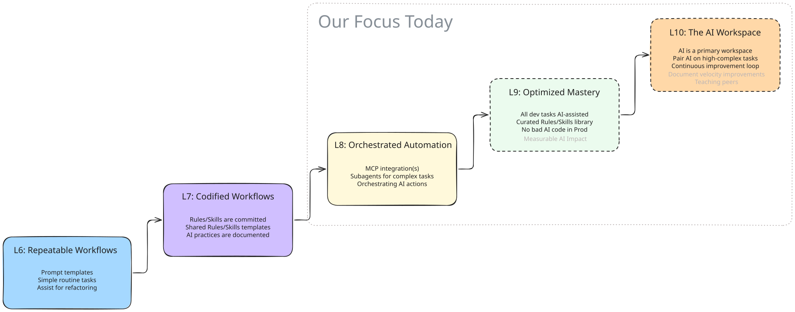
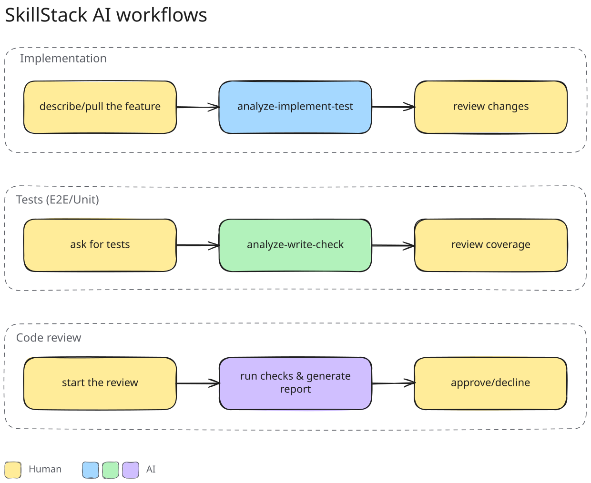
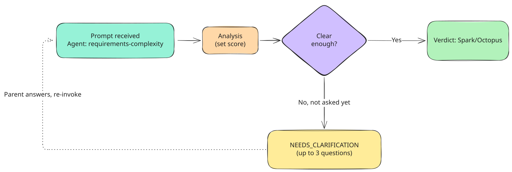
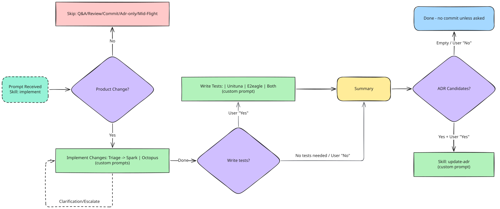
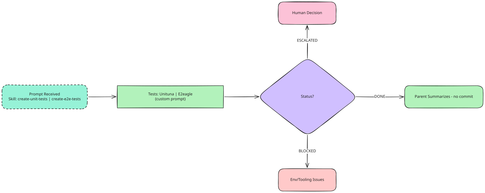
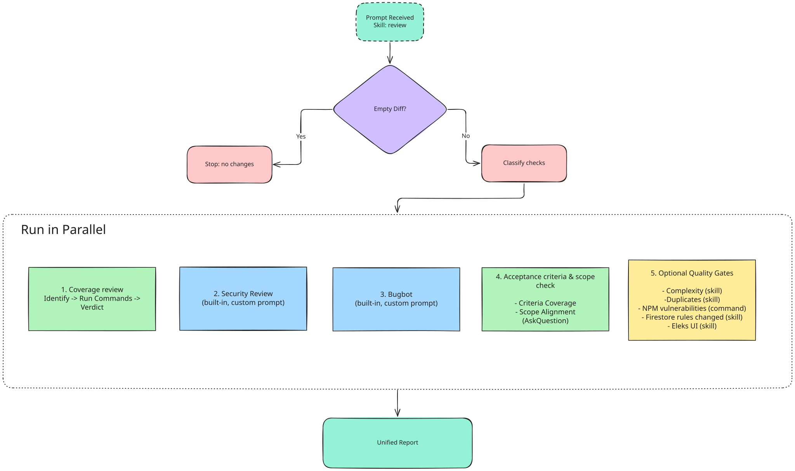

<!DOCTYPE html>
<html lang="en">
  <head>
    <meta charset="utf-8" />
    <meta name="viewport" content="width=device-width, initial-scale=1.0, maximum-scale=1.0, user-scalable=no" />

    <title></title>
    <link rel="stylesheet" href="dist/reveal.css" />
    <link rel="stylesheet" href="dist/theme/serif.css" id="theme" />
    <link rel="stylesheet" href="plugin/highlight/monokai.css" />
	<link rel="stylesheet" href="css/layout.css" />
	<link rel="stylesheet" href="plugin/customcontrols/style.css">
	<link rel="stylesheet" href="plugin/chalkboard/style.css">

	<link rel="stylesheet" href="plugin/reveal-pointer/pointer.css" />


    <script defer src="dist/fontawesome/all.min.js"></script>

	<script type="text/javascript">
		var forgetPop = true;
		function onPopState(event) {
			if(forgetPop){
				forgetPop = false;
			} else {
				parent.postMessage(event.target.location.href, "app://obsidian.md");
			}
        }
		window.onpopstate = onPopState;
		window.onmessage = event => {
			if(event.data == "reload"){
				window.document.location.reload();
			}
			forgetPop = true;
		}

		function fitElements(){
			const itemsToFit = document.getElementsByClassName('fitText');
			for (const item in itemsToFit) {
				if (Object.hasOwnProperty.call(itemsToFit, item)) {
					var element = itemsToFit[item];
					fitElement(element,1, 1000);
					element.classList.remove('fitText');
				}
			}
		}

		function fitElement(element, start, end){

			let size = (end + start) / 2;
			element.style.fontSize = `${size}px`;

			if(Math.abs(start - end) < 1){
				while(element.scrollHeight > element.offsetHeight){
					size--;
					element.style.fontSize = `${size}px`;
				}
				return;
			}

			if(element.scrollHeight > element.offsetHeight){
				fitElement(element, start, size);
			} else {
				fitElement(element, size, end);
			}		
		}


		document.onreadystatechange = () => {
			fitElements();
			if (document.readyState === 'complete') {
				if (window.location.href.indexOf("?export") != -1){
					parent.postMessage(event.target.location.href, "app://obsidian.md");
				}
				if (window.location.href.indexOf("print-pdf") != -1){
					let stateCheck = setInterval(() => {
						clearInterval(stateCheck);
						window.print();
					}, 250);
				}
			}
	};


        </script>
  </head>
  <body>
    <div class="reveal">
      <div class="slides"><section  data-markdown><script type="text/template"><!-- .slide: class="drop" -->
<div class="" style="position: absolute; left: 0px; top: 0px; height: 800px; width: 1600px; min-height: 800px; display: flex; flex-direction: column; align-items: center; justify-content: center" absolute="true">

<style>
body .reveal table  {
  margin-top: 10px;
  margin-bottom: 10px
}
/* <aside class="notes"><p>keep fragment layout (no title jump); strip chrome while hidden */
.reveal .slides section .fragment:not(.visible) {
  border: none !important;
  background: transparent !important;
  box-shadow: none !important;
}
</style></p>
<h2 id="module-4-orchestrated-automation">Module #4: Orchestrated Automation</h2>
</div></aside></script></section><section  data-markdown><script type="text/template"><!-- .slide: class="drop" -->
<div class="" style="position: absolute; left: 0px; top: 0px; height: 800px; width: 1600px; min-height: 800px; display: flex; flex-direction: column; align-items: center; justify-content: center" absolute="true">

## Table of Contents

- &shy;<!-- .element: class="fragment" data-fragment-index="1" -->Orchestrated Automation — _checkpoints, not one-shot auto_
- &shy;<!-- .element: class="fragment" data-fragment-index="2" -->Feature Implementation — _route, then code_
- &shy;<!-- .element: class="fragment" data-fragment-index="3" -->Test Automation — _two specialists, one call_
- &shy;<!-- .element: class="fragment" data-fragment-index="4" -->Code Review — _many ears, one report_

<!-- .element: style="font-size: 2.0rem" -->
</div></script></section><section ><section data-markdown><script type="text/template"><!-- .slide: class="drop" -->
<div class="" style="position: absolute; left: 0px; top: 0px; height: 800px; width: 1600px; min-height: 800px; display: flex; flex-direction: column; align-items: center; justify-content: center" absolute="true">

## Orchestrated Automation

> Rules and skills were the score. Now you need a **conductor**.

<!-- .element: class="fragment" data-fragment-index="1" -->

<ul style="font-size: 2.0rem">
<li class="fragment" data-fragment-index="2">Delegate focused work to specialists</li>
<li class="fragment" data-fragment-index="3">Route decisions through an orchestrator</li>
<li class="fragment" data-fragment-index="4">Keep quality gates and human control</li>
</ul>
</div></script></section><section data-markdown><script type="text/template"><!-- .slide: class="drop" -->
<div class="" style="position: absolute; left: 0px; top: 0px; height: 800px; width: 1600px; min-height: 800px; display: flex; flex-direction: column; align-items: center; justify-content: center" absolute="true">

### 📶 A bigger prompt won't get you here




notes:

Transition to Level 6: Repeatable Workflows

- ✅ You rely on a personal set of prompt templates for common tasks.
- ✅ You routinely use AI to generate tests, write PR descriptions, and draft commit
  messages.
- ✅ You handle non-trivial refactoring tasks using AI assistance.

Transition to Level 7: Codified Workflows (Rules & Skills)

- ✅ Project rules are committed to the repository and govern AI output.
- ✅ You have 2-3 codified skills/templates shared with the team.
- ✅ Your AI practices are fully documented and reproducible.

Transition to Level 8: Orchestrated Automation (Integrations)

- ✅ You routinely pull context directly from Jira, Confluence, or Databases via MCP
  integrations.
- ✅ You use subagents to execute complex, multi-file feature scaffolding or migrations
  end-to-end.
- ✅ You spend less time gathering context and more time orchestrating AI actions.

Transition to Level 9: Optimized Mastery (Quality & Curation)

- ✅ Nearly all of your routine development tasks are fully AI-assisted.
- ✅ You maintain a curated library of project-specific AI skills.
- ✅ Strict quality gates prevent bad AI code from reaching production.
- ✅ You can demonstrate measurable impact and traceability of your AI usage.

Transition to Level 10: Mastery (The AI Workspace)

- ✅ The AI workspace is your primary development interface.
- ✅ You actively pair-program with AI on highly complex, non-trivial tasks.
- ✅ You have a continuous improvement loop that instantly updates rules when AI fails.
- ✅ You are driving measurable velocity improvements and lifting the maturity of your
  peers.
</div></script></section><section data-markdown><script type="text/template"><!-- .slide: class="drop" -->
<div class="" style="position: absolute; left: 0px; top: 0px; height: 800px; width: 1600px; min-height: 800px; display: flex; flex-direction: column; align-items: center; justify-content: center" absolute="true">

### 🗺️ Our Worflows AI infrastructure


</div></script></section><section data-markdown><script type="text/template"><!-- .slide: class="drop" -->
<div class="" style="position: absolute; left: 0px; top: 0px; height: 800px; width: 1600px; min-height: 800px; display: flex; flex-direction: column; align-items: center; justify-content: center" absolute="true">

### 🛑 Whoa — not one giant symphony

<div class="block">

Full auto on a product feature is **expensive**. You also lose the baton.

We split the flow on purpose. </div>


<!-- .element: style="font-size: 2.0rem" -->

> 📌 **Rule:** orchestration with checkpoints — not a one-shot agent.

<!-- .element: style="font-size: 2.0rem" -->

notes:

Stress this: we are not chasing full AI automation of implementation. Cost + control.
Three large stages, with a human gate between them.
</div></script></section><section data-markdown><script type="text/template"><!-- .slide: class="drop" -->
<div class="" style="position: absolute; left: 0px; top: 0px; height: 800px; width: 1600px; min-height: 800px; display: flex; flex-direction: column; align-items: center; justify-content: center" absolute="true">

### 🎼 Three movements, one band

<ol style="font-size: 2.0rem">
<li class="fragment" data-fragment-index="1"><strong>Analysis + implementation</strong> — route, then ship the change</li>
<li class="fragment" data-fragment-index="2"><strong>Tests</strong> — protect behavior and journeys</li>
<li class="fragment" data-fragment-index="3"><strong>Code review</strong> — verify from multiple angles</li>
</ol>

> 🎯 **Best for:** control at each movement — not one endless run.

<!-- .element: style="font-size: 2.0rem" class="fragment" data-fragment-index="4" -->
</div></script></section></section><section ><section data-markdown><script type="text/template"><!-- .slide: class="drop" -->
<div class="" style="position: absolute; left: 0px; top: 0px; height: 800px; width: 1600px; min-height: 800px; display: flex; flex-direction: column; align-items: center; justify-content: center" absolute="true">

## Feature Implementation

> You don't just generate code. You **conduct** the change.

<!-- .element: class="fragment" data-fragment-index="1" -->
</div></script></section><section data-markdown><script type="text/template"><!-- .slide: class="drop" -->
<div class="" style="position: absolute; left: 0px; top: 0px; height: 800px; width: 1600px; min-height: 800px; display: flex; flex-direction: column; align-items: center; justify-content: center" absolute="true">

### 🪜 From request to validated change

Clarify → assess → plan → implement → test → validate

<!-- .element: class="fragment" data-fragment-index="1" -->

<ul style="font-size: 2.0rem">
<li class="fragment" data-fragment-index="2"><strong>Clarify</strong> — goal, constraints, acceptance criteria</li>
<li class="fragment" data-fragment-index="3"><strong>Assess</strong> — scope, contracts, architecture risk</li>
<li class="fragment" data-fragment-index="4"><strong>Implement</strong> — the plan and the diff</li>
<li class="fragment" data-fragment-index="5"><strong>Validate</strong> — tests and evidence</li>
</ul>

notes:

Ask the room to name these stages before the first line of code — clarification, risk
assessment, a plan, checks.
</div></script></section><section data-markdown><script type="text/template"><!-- .slide: class="drop" -->
<div class="" style="position: absolute; left: 0px; top: 0px; height: 800px; width: 1600px; min-height: 800px; display: flex; flex-direction: column; align-items: center; justify-content: center" absolute="true">

### 🧍 Hard mode: you did all of this yourself

<ul style="font-size: 2.0rem">
<li class="fragment" data-fragment-index="1">Re-reading the ticket to guess the real acceptance criteria</li>
<li class="fragment" data-fragment-index="2">Deciding "small fix" vs "this touches three packages"</li>
<li class="fragment" data-fragment-index="3">Keeping scope from drifting mid-change</li>
<li class="fragment" data-fragment-index="4">Remembering which tests this even needs</li>
</ul>
</div></script></section><section data-markdown><script type="text/template"><!-- .slide: class="drop" -->
<div class="" style="position: absolute; left: 0px; top: 0px; height: 800px; width: 1600px; min-height: 800px; display: flex; flex-direction: column; align-items: center; justify-content: center" absolute="true">

### 🤖 Same stages — less carrying

<ul style="font-size: 2.0rem">
<li class="fragment" data-fragment-index="1">AI scores complexity; you confirm</li>
<li class="fragment" data-fragment-index="2">The executor holds plan, scope, and diff</li>
<li class="fragment" data-fragment-index="3">Tests and ADRs are cued, not remembered</li>
</ul>

> 🎯 **Best for:** keeping every stage when the day gets busy.

<!-- .element: style="font-size: 2.0rem" class="fragment" data-fragment-index="4" -->
</div></script></section><section data-markdown><script type="text/template"><!-- .slide: class="drop" -->
<div class="" style="position: absolute; left: 0px; top: 0px; height: 800px; width: 1600px; min-height: 800px; display: flex; flex-direction: column; align-items: center; justify-content: center" absolute="true">

### 🗺️ Routed implementation (Triage)




notes:

- Does not implement and does not ask the user — one block: verdict or NEEDS_CLARIFICATION
- Any High dimension → Octopus; all Low → Spark
- We know what to build, the risk is unclear → complex
- No one-sentence Task → clarification
- Up to 3 questions with options; the parent asks. At most 3 clarification rounds, then stop with no executor
</div></script></section><section data-markdown><script type="text/template"><!-- .slide: class="drop" -->
<div class="" style="position: absolute; left: 0px; top: 0px; height: 800px; width: 1600px; min-height: 800px; display: flex; flex-direction: column; align-items: center; justify-content: center" absolute="true">

### 🗺️ Routed implementation (Full Flow)




notes:

- Sequential: triage → one executor → tests → summary → ADR
- While Spark or Octopus is working, the parent does not edit code itself
- One executor, and only after triage
- Tests: classify none / unit / e2e / both. Ask only if not none. Writers only on Yes. Both means Unituna, then E2eagle, and wait
- Clarification re-runs triage (max 3). Escalation relaunches the executor — no new triage
- ADR waits in the foreground after approval
- Commit — only if the prompt says so explicitly
</div></script></section><section data-markdown><script type="text/template"><!-- .slide: class="drop" -->
<div class="" style="position: absolute; left: 0px; top: 0px; height: 800px; width: 1600px; min-height: 800px; display: flex; flex-direction: column; align-items: center; justify-content: center" absolute="true">

### 🎬 Cue the orchestra

From a request to a validated change — one conducted workflow.

notes:

Switch to Cursor. Show launching the implement skill, the complexity verdict, the choice of Spark
or Octopus, the run, and the final structured summary. Explain the code during the demo.
</div></script></section></section><section ><section data-markdown><script type="text/template"><!-- .slide: class="drop" -->
<div class="" style="position: absolute; left: 0px; top: 0px; height: 800px; width: 1600px; min-height: 800px; display: flex; flex-direction: column; align-items: center; justify-content: center" absolute="true">

## Test Automation

> Tests protect behavior and journeys — not a line count.

<!-- .element: class="fragment" data-fragment-index="1" -->
</div></script></section><section data-markdown><script type="text/template"><!-- .slide: class="drop" -->
<div class="" style="position: absolute; left: 0px; top: 0px; height: 800px; width: 1600px; min-height: 800px; display: flex; flex-direction: column; align-items: center; justify-content: center" absolute="true">

### 🪜 Stages before the first spec

Inspect → map risk → choose level → write → run → review

<!-- .element: class="fragment" data-fragment-index="1" -->

<ul style="font-size: 2.0rem">
<li class="fragment" data-fragment-index="2"><strong>Inspect</strong> — what actually changed</li>
<li class="fragment" data-fragment-index="3"><strong>Map risk</strong> — behavior or user journey</li>
<li class="fragment" data-fragment-index="4"><strong>Write</strong> — focused specs, stable fixtures</li>
<li class="fragment" data-fragment-index="5"><strong>Run</strong> — reproducible output, real gaps</li>
</ul>

notes:

Ask the room to name these stages: where a unit test is needed, where E2E is, and where a new
test adds no value. Generation is not the first step.
</div></script></section><section data-markdown><script type="text/template"><!-- .slide: class="drop" -->
<div class="" style="position: absolute; left: 0px; top: 0px; height: 800px; width: 1600px; min-height: 800px; display: flex; flex-direction: column; align-items: center; justify-content: center" absolute="true">

### 🧍 Hard mode: you did all of this yourself

<ul style="font-size: 2.0rem">
<li class="fragment" data-fragment-index="1">Scrolling the diff to find what deserves a test</li>
<li class="fragment" data-fragment-index="2">Arguing unit vs E2E with yourself</li>
<li class="fragment" data-fragment-index="3">Copy-pasting an old spec as a template</li>
<li class="fragment" data-fragment-index="4">Re-running the suite to see whether it was you</li>
</ul>
</div></script></section><section data-markdown><script type="text/template"><!-- .slide: class="drop" -->
<div class="" style="position: absolute; left: 0px; top: 0px; height: 800px; width: 1600px; min-height: 800px; display: flex; flex-direction: column; align-items: center; justify-content: center" absolute="true">

### 🤖 Same stages — less scrolling

<ul style="font-size: 2.0rem">
<li class="fragment" data-fragment-index="1">The diff is read for you</li>
<li class="fragment" data-fragment-index="2">The specialist matches the risk</li>
<li class="fragment" data-fragment-index="3">The suite runs and reports back</li>
<li class="fragment" data-fragment-index="4">Ambiguity returns as a question, not a guess</li>
</ul>
</div></script></section><section data-markdown><script type="text/template"><!-- .slide: class="drop" -->
<div class="" style="position: absolute; left: 0px; top: 0px; height: 800px; width: 1600px; min-height: 800px; display: flex; flex-direction: column; align-items: center; justify-content: center" absolute="true">

### 🧭 Two specialists

| Signal                               | Route          |
| ------------------------------------ | -------------- |
| Logic, branches, validation, errors  | **🍣 Unituna** |
| User-visible flows across boundaries | **🦅 E2eagle** |
| Both risks in the same change        | **both**       |
| No testable contract                 | **none**       |

<!-- .element: style="font-size: 2.0rem" -->

> 📌 **Rule:** pick the specialist for the risk — not a test for every file.

<!-- .element: style="font-size: 2.0rem" class="fragment" data-fragment-index="1" -->
</div></script></section><section data-markdown><script type="text/template"><!-- .slide: class="drop" -->
<div class="" style="position: absolute; left: 0px; top: 0px; height: 800px; width: 1600px; min-height: 800px; display: flex; flex-direction: column; align-items: center; justify-content: center" absolute="true">

### 📌 Proof, not more files

<ul style="font-size: 2.0rem">
<li class="fragment" data-fragment-index="1">Analyze the current change before adding tests</li>
<li class="fragment" data-fragment-index="2">Protect behavior — not implementation details</li>
<li class="fragment" data-fragment-index="3">Run the relevant suite and report the result</li>
<li class="fragment" data-fragment-index="4">Escalate ambiguity instead of writing speculative tests</li>
</ul>

> 📌 **Rule:** a generated test matters only when it proves something.

<!-- .element: style="font-size: 2.0rem" class="fragment" data-fragment-index="5" -->
</div></script></section><section data-markdown><script type="text/template"><!-- .slide: class="drop" -->
<div class="" style="position: absolute; left: 0px; top: 0px; height: 800px; width: 1600px; min-height: 800px; display: flex; flex-direction: column; align-items: center; justify-content: center" absolute="true">

### 🗺️ Test routing




notes:

- **Gather** - Request + workspace. Parent never writes tests.
- **Launch** - One Task: Unituna or E2eagle. Foreground — wait.
- **Cover** - Git diff only. Gaps: behavior (unit) or journey (e2e).
- **Prove** - Run the suite. New tests pass; no speculative coverage.
- **Return** - DONE / ESCALATED / BLOCKED + files. Parent summarizes. No commit.
- ESCALATED — a human decision is needed: unclear behavior, the wrong test level (unit vs e2e vs
  integration), production code has to change, existing tests contradict the expectation. Do not
  write speculative tests.
- BLOCKED — the environment: the suite won't start, infra is broken, there is no way to run the
  tests. The reply names the command that failed.
</div></script></section><section data-markdown><script type="text/template"><!-- .slide: class="drop" -->
<div class="" style="position: absolute; left: 0px; top: 0px; height: 800px; width: 1600px; min-height: 800px; display: flex; flex-direction: column; align-items: center; justify-content: center" absolute="true">

### 🎬 Let’s protect the change

Route the risk, cue the specialist, inspect the evidence.

notes:

In the live demo, first show Unituna on changed behavior. Then E2eagle for a
user-visible journey, if the change touches one. Draw attention to structured output and
validation, not to how many tests were created.
</div></script></section></section><section ><section data-markdown><script type="text/template"><!-- .slide: class="drop" -->
<div class="" style="position: absolute; left: 0px; top: 0px; height: 800px; width: 1600px; min-height: 800px; display: flex; flex-direction: column; align-items: center; justify-content: center" absolute="true">

## Code Review

> A quality gate before human approval — not a final glance at the diff.

<!-- .element: class="fragment" data-fragment-index="1" -->
</div></script></section><section data-markdown><script type="text/template"><!-- .slide: class="drop" -->
<div class="" style="position: absolute; left: 0px; top: 0px; height: 800px; width: 1600px; min-height: 800px; display: flex; flex-direction: column; align-items: center; justify-content: center" absolute="true">

### 🪜 Stages of one review

Scope → coverage → security → defects → intent → gates → report

<!-- .element: class="fragment" data-fragment-index="1" -->

<ul style="font-size: 2.0rem">
<li class="fragment" data-fragment-index="2"><strong>Scope</strong> — what changed, which packages</li>
<li class="fragment" data-fragment-index="3"><strong>Findings</strong> — severity, location, evidence</li>
<li class="fragment" data-fragment-index="4"><strong>Gates</strong> — tests, coverage, static checks</li>
<li class="fragment" data-fragment-index="5"><strong>Decision</strong> — ready, needs work, blocked</li>
</ul>

notes:

Ask them to name stages besides correctness: security, tests, acceptance criteria, scope,
complexity, duplication, and project-specific conventions.
</div></script></section><section data-markdown><script type="text/template"><!-- .slide: class="drop" -->
<div class="" style="position: absolute; left: 0px; top: 0px; height: 800px; width: 1600px; min-height: 800px; display: flex; flex-direction: column; align-items: center; justify-content: center" absolute="true">

### 🧍 Hard mode: you did all of this yourself

<ul style="font-size: 2.0rem">
<li class="fragment" data-fragment-index="1">Reading the same diff four times for four concerns</li>
<li class="fragment" data-fragment-index="2">Checking the ticket for what was actually promised</li>
<li class="fragment" data-fragment-index="3">Spotting the drive-by refactor that rode along</li>
<li class="fragment" data-fragment-index="4">Writing the summary nobody has time to write</li>
</ul>
</div></script></section><section data-markdown><script type="text/template"><!-- .slide: class="drop" -->
<div class="" style="position: absolute; left: 0px; top: 0px; height: 800px; width: 1600px; min-height: 800px; display: flex; flex-direction: column; align-items: center; justify-content: center" absolute="true">

### 🤖 Same passes — in parallel

<ul style="font-size: 2.0rem">
<li class="fragment" data-fragment-index="1">Every concern gets its own pass</li>
<li class="fragment" data-fragment-index="2">Irrelevant checks are skipped, not faked</li>
<li class="fragment" data-fragment-index="3">Findings arrive as one report with severity</li>
</ul>

> 📌 **Rule:** AI gives the first systematic pass; you still approve.

<!-- .element: style="font-size: 2.0rem" class="fragment" data-fragment-index="4" -->
</div></script></section><section data-markdown><script type="text/template"><!-- .slide: class="drop" -->
<div class="" style="position: absolute; left: 0px; top: 0px; height: 800px; width: 1600px; min-height: 800px; display: flex; flex-direction: column; align-items: center; justify-content: center" absolute="true">

### 👂 Always-on chairs

<ul style="font-size: 2.0rem">
<li class="fragment" data-fragment-index="1"><strong>Coverage</strong> — does each changed behavior have protection?</li>
<li class="fragment" data-fragment-index="2"><strong>Security and defects</strong> — what could fail or be exploited?</li>
<li class="fragment" data-fragment-index="3"><strong>Acceptance criteria</strong> — did we build the intended outcome?</li>
<li class="fragment" data-fragment-index="4"><strong>Scope alignment</strong> — did unrelated changes ride along?</li>
</ul>
</div></script></section><section data-markdown><script type="text/template"><!-- .slide: class="drop" -->
<div class="" style="position: absolute; left: 0px; top: 0px; height: 800px; width: 1600px; min-height: 800px; display: flex; flex-direction: column; align-items: center; justify-content: center" absolute="true">

### 🎛️ Extra chairs — only if the diff needs them

<ul style="font-size: 2.0rem">
<li class="fragment" data-fragment-index="1"><strong>Complexity</strong> — scan changed executable code</li>
<li class="fragment" data-fragment-index="2"><strong>Duplication</strong> — inspect broad or shared changes</li>
<li class="fragment" data-fragment-index="3"><strong>Dependencies</strong> — audit changed manifests and lockfiles</li>
<li class="fragment" data-fragment-index="4"><strong>Domain checks</strong> — UI kit, security rules, schemas — only if the diff touched them</li>
</ul>

> 📌 **Rule:** run the checks the diff asks for — not every check every time.

<!-- .element: style="font-size: 2.0rem" class="fragment" data-fragment-index="5" -->

notes:

- Domain checks — not always. Only if the diff has the relevant files.
- Examples: a UI kit (in SkillStack — ELEKS UI), security rules (Firestore), Zod/API schemas.
- A button change ≠ a rules audit. A Cloud Function change ≠ a design-system review.
</div></script></section><section data-markdown><script type="text/template"><!-- .slide: class="drop" -->
<div class="" style="position: absolute; left: 0px; top: 0px; height: 800px; width: 1600px; min-height: 800px; display: flex; flex-direction: column; align-items: center; justify-content: center" absolute="true">

### 🗺️ Code Review Workflow




notes:

- Read-only
- Analyze `uncommitted changes` by default,
- Analyze `branch changes` only when the user asks to review the whole branch or a PR
- Reuse task context (summary of implement skill) - if applicable
- Run in parallel
- Skip irrelevant checks
- Do not fix
</div></script></section><section data-markdown><script type="text/template"><!-- .slide: class="drop" -->
<div class="" style="position: absolute; left: 0px; top: 0px; height: 800px; width: 1600px; min-height: 800px; display: flex; flex-direction: column; align-items: center; justify-content: center" absolute="true">

### 🎬 Let’s review the change

One diff. Many specialists. One actionable report.

notes:

Launch the review skill on the changes from the previous demos. Show classification, the parallel
review dimensions, and the unified report. Stress: AI gives the first systematic pass, but
the final approve stays with a human.
</div></script></section></section><section  data-markdown><script type="text/template"><!-- .slide: class="drop" -->
<div class="" style="position: absolute; left: 0px; top: 0px; height: 800px; width: 1600px; min-height: 800px; display: flex; flex-direction: column; align-items: center; justify-content: center" absolute="true">

## ✨⚔️✨ AI Jedi unlocked!!!

You now: <!-- .element: class="fragment" data-fragment-index="1" -->

<ul style="font-size: 2.0rem">
<li class="fragment" data-fragment-index="2">Write the laws of your world</li>
<li class="fragment" data-fragment-index="3">Command agents like a general</li>
<li class="fragment" data-fragment-index="4">Hands off the shovel — you still read the map</li>
</ul>

> 🎉🌟 You're a Jedi — _almost_ 🤭 </br> ⚠️🛤️ The path doesn't end here. 🚀

<!-- .element: style="font-size: 2.0rem" class="fragment" data-fragment-index="5" -->

notes:

Encourage them: they already know how to orchestrate. The "but" is not the end of the path
(Level 9–10), not a lecture, and not "you failed the module."
</div></script></section><section  data-markdown><script type="text/template"><!-- .slide: class="drop" -->
<div class="" style="position: absolute; left: 0px; top: 0px; height: 800px; width: 1600px; min-height: 800px; display: flex; flex-direction: column; align-items: center; justify-content: center" absolute="true">

## 🤨 Q&A session
</div></script></section></div>
    </div>

    <script src="dist/reveal.js"></script>

    <script src="plugin/markdown/markdown.js"></script>
    <script src="plugin/highlight/highlight.js"></script>
    <script src="plugin/zoom/zoom.js"></script>
    <script src="plugin/notes/notes.js"></script>
    <script src="plugin/math/math.js"></script>
	<script src="plugin/mermaid/mermaid.js"></script>
	<script src="plugin/chart/chart.min.js"></script>
	<script src="plugin/chart/plugin.js"></script>
	<script src="plugin/menu/menu.js"></script>
	<script src="plugin/customcontrols/plugin.js"></script>
	<script src="plugin/chalkboard/plugin.js"></script>
	<script src="plugin/reveal-pointer/pointer.js"></script>
	<script src="plugin/elapsed-time-bar/elapsed-time-bar.js"></script>

    <script>
      function extend() {
        var target = {};
        for (var i = 0; i < arguments.length; i++) {
          var source = arguments[i];
          for (var key in source) {
            if (source.hasOwnProperty(key)) {
              target[key] = source[key];
            }
          }
        }
        return target;
      }

	  function isLight(color) {
		let hex = color.replace('#', '');

		// convert #fff => #ffffff
		if(hex.length == 3){
			hex = `${hex[0]}${hex[0]}${hex[1]}${hex[1]}${hex[2]}${hex[2]}`;
		}

		const c_r = parseInt(hex.substr(0, 2), 16);
		const c_g = parseInt(hex.substr(2, 2), 16);
		const c_b = parseInt(hex.substr(4, 2), 16);
		const brightness = ((c_r * 299) + (c_g * 587) + (c_b * 114)) / 1000;
		return brightness > 155;
	}

	var bgColor = getComputedStyle(document.documentElement).getPropertyValue('--r-background-color').trim();
	var isLight = isLight(bgColor);

	if(isLight){
		document.body.classList.add('has-light-background');
	} else {
		document.body.classList.add('has-dark-background');
	}

      // default options to init reveal.js
      var defaultOptions = {
        controls: true,
        progress: true,
        history: true,
        center: true,
        transition: 'default', // none/fade/slide/convex/concave/zoom
        plugins: [
          RevealMarkdown,
          RevealHighlight,
          RevealZoom,
          RevealNotes,
          RevealMath.MathJax3,
		  RevealMermaid,
		  RevealChart,
		  RevealCustomControls,
		  RevealMenu,
	      RevealPointer,
		  RevealChalkboard, 
		  ElapsedTimeBar
        ],


    	allottedTime: 120 * 1000,

		mathjax3: {
			mathjax: 'plugin/math/mathjax/tex-mml-chtml.js',
		},
		markdown: {
		  gfm: true,
		  mangle: true,
		  pedantic: false,
		  smartLists: false,
		  smartypants: false,
		},

		mermaid: {
			theme: isLight ? 'default' : 'dark',
		},

		customcontrols: {
			controls: [
				{ icon: '<i class="fa fa-pen-square"></i>',
				title: 'Toggle chalkboard (B)',
				action: 'RevealChalkboard.toggleChalkboard();'
				},
				{ icon: '<i class="fa fa-pen"></i>',
				title: 'Toggle notes canvas (C)',
				action: 'RevealChalkboard.toggleNotesCanvas();'
				},
			]
		},
		menu: {
			loadIcons: false
		}
      };

      // options from URL query string
      var queryOptions = Reveal().getQueryHash() || {};

      var options = extend(defaultOptions, {"width":1600,"height":800,"margin":0,"controls":true,"progress":true,"slideNumber":true,"transition":"slide","transitionSpeed":"default"}, queryOptions);
    </script>

    <script>
      Reveal.initialize(options);
    </script>
  </body>

  <!-- created with Advanced Slides -->
</html>
